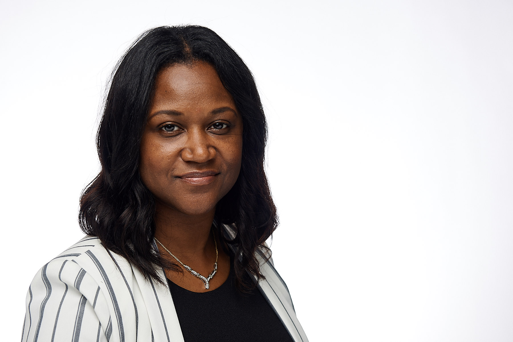

About Me
My Name is Tysheba L. Morgan. I was born on December 13th, 1974 in Cleveland, Ohio. My parents are Tyrone Morgan and Frances Elizabeth Gregley. I am the third child of six - four girls and two boys.
I graduated from Howard Univerty with a Masters in Finance. I've always loved to work with numbers. I was good in math as a child so I studied accounting and finance in school.
Just recently I started to realize I have a love for programming and fashion. I know the two don't mix. I really started to appreciate technology and what programming can do while working in the finance and accounting profession. In all the corporate jobs I have had, my proudest accomplishments are those where I used technology to make processes simpler and more efficient. Whether I created a nice Excel Spreadsheet with impressive macros, an Access Database program, or worked with an in-house geek to create a custom program; I have enjoyed the process of creating something.
On the fashion side - I am the co-owner of a boutique called Charm City Boutique located in the University area of Charlotte, North Carolina. My boyfriend and I love to buy clothes from all over the world, put outfits together, and sell them. We also love being entrepenuers. Our goal is to retire young and rich.